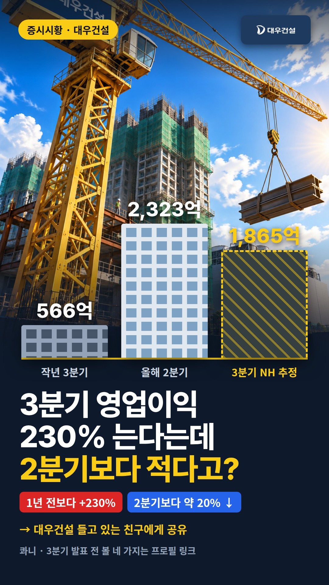
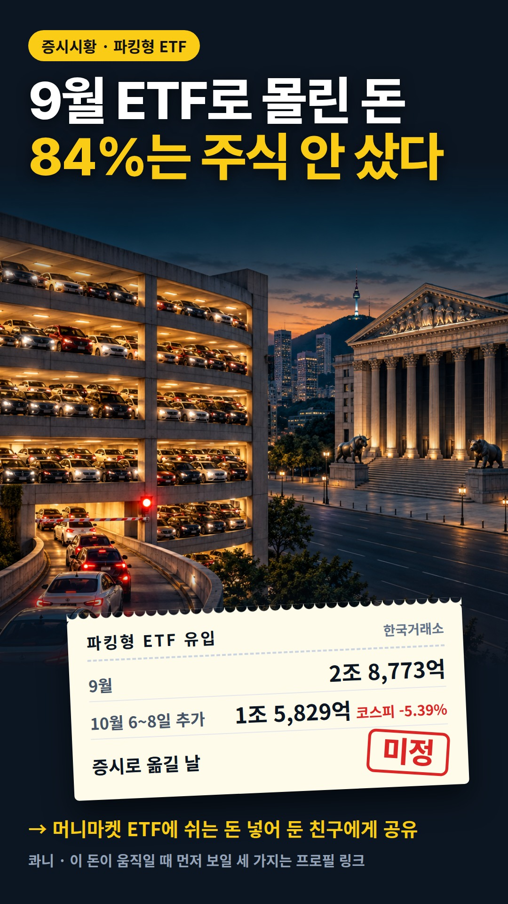
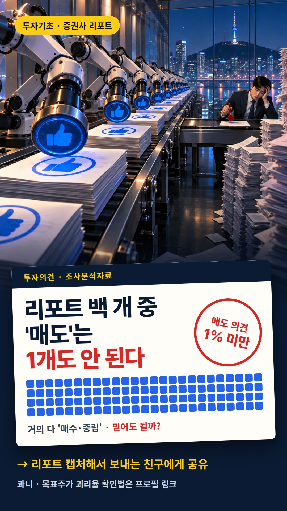
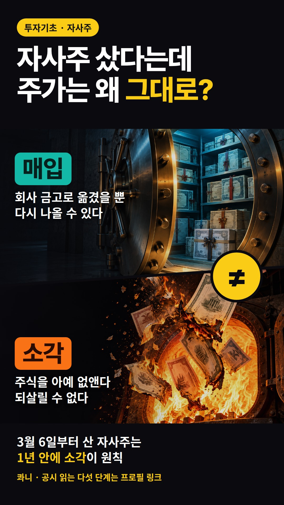
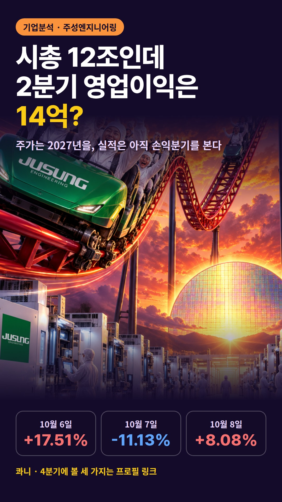
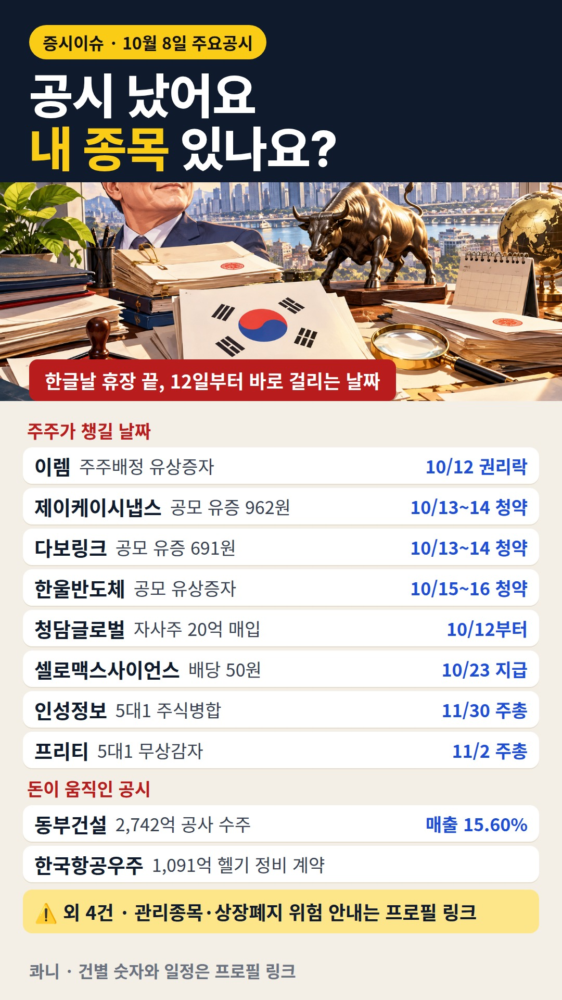
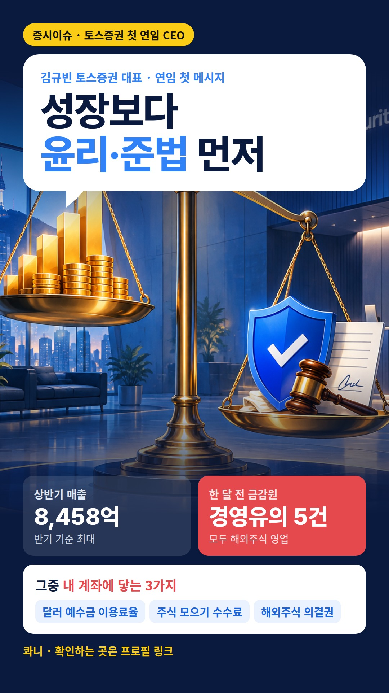

음악은 비어 있습니다. ① 사진·영상 저장(사진은 길게 눌러 저장해도 됩니다) → ② 인스타 앱 ＋ → 릴스 → 저장한 사진·영상 → 「오디오」에서 음원 고르기 → ③ 본문 복사해 붙여 넣고 올리기. 본문을 그대로 두면 다음 릴스가 생길 때 「인스타에 올림」 표시가 붙고 아래로 내려갑니다. 사진·영상은 올렸든 안 올렸든 3일이 지나면 지워집니다.

영업이익 230% 는다는데 2분기보다 적다? 대우건설 3분기 셈법을 정리했어요. ✔️ NH투자증권 3분기 추정 1,865억원, 2분기 실제는 2,323억원 ✔️ 10월 8일 조직개편: 도시정비 3개 팀, 데이터센터사업팀, 안전품질본부 여러분은 3분기 발표에서 무엇부터 보시나요? 댓글로 알려 주세요. 📌 3분기 발표 전 확인할 네 가지는 프로필 링크 블로그에 정리해 뒀어요. 저장해 두고 실적 발표 날 꺼내 보세요! 👉 대우건설 들고 있는 친구에게 공유해 주세요 👉 이슈 하나를 끝까지 파는 정리를 받아 보려면 @kwani__001 팔로우 #대우건설 #대우건설주가 #도시정비사업 #건설주 #콰니

코스피는 9월 한 달 0.26% 제자리인데, ETF에 들어온 돈의 84%는 파킹형 ETF로 갔어요. ✔️ 9월 파킹형 ETF 유입 2조 8,773억 ✔️ 코스피 사흘 -5.39% 빠진 10월 6~8일에도 1조 5,829억 더 ✔️ 오른 날 13일 중 10일에도 돈이 들어왔어요 여러분은 쉬는 돈 어디에 세워 두고 계신가요? 댓글로 알려 주세요. 📌 이 돈이 움직일 때 먼저 보일 세 가지는 프로필 링크 블로그에 정리해 뒀어요. 저장해 두고 다음 장 열릴 때 꺼내 보세요! 👉 머니마켓 ETF에 쉬는 돈 넣어 둔 친구에게 공유해 주세요 👉 매일 증시 흐름 정리는 @kwani__001 팔로우 #파킹형ETF #머니마켓ETF #코스피 #투자자예탁금 #콰니

증권사 리포트 매도 의견은 1%도 안 돼요. 그럼 리포트 의견은 어떻게 읽어야 할까요? ✔️ 리포트에는 과거 2년 목표주가 변동추이가 실려요 ✔️ 괴리율로 그 증권사 숫자가 얼마나 맞아 왔는지 봐요 ✔️ IR 자료는 KIND IR자료실에서 직접 받아요 여러분은 리포트에서 무엇부터 보시나요? 댓글로 알려 주세요. 📌 괴리율 계산법은 프로필 링크 블로그에 정리해 뒀어요. 저장해 두고 다음 리포트 볼 때 꺼내 보세요! 👉 리포트 캡처해서 보내는 친구에게 공유해 주세요 👉 투자기초 정리를 계속 받아 보려면 @kwani__001 팔로우 #증권사리포트 #목표주가 #IR자료 #주식공부 #콰니
1999년에 반도체를 접은 LG가 27년 만에 차량용 칩 설계에 다시 나섰어요. ✔️ LG전자 베이스 칩 + 보스반도체 AI 칩, 하나마이크론이 검증·패키징 ✔️ 차량용 반도체 국산화율은 5% 수준 ✔️ 보쉬 공급은 '논의 중' 보도까지, 계약 발표는 아직 여러분은 이 협력이 실제 공급 계약으로 이어질 거라고 보시나요? 댓글로 알려 주세요. 📌 다음 거래일 전에 확인할 세 가지는 프로필 링크 블로그에 정리해 뒀어요. 저장해 두고 공시 나올 때 꺼내 보세요! 👉 LG전자 들고 있는 친구에게 공유해 주세요 👉 증시 이슈 정리를 계속 받아 보려면 @kwani__001 팔로우 #LG전자 #차량용반도체 #칩렛 #보스반도체 #콰니

자사주를 샀다는 공시와 소각한다는 공시는 서로 다른 이야기예요. ✔️ 2026년 3월 6일부터 산 자사주는 1년 안에 소각이 원칙 ✔️ 남기려면 보유처분계획을 매년 주총에서 승인 ✔️ 시행 전부터 가진 자사주는 1년 6개월 안 여러분은 자사주 공시에서 어느 칸부터 보시나요? 댓글로 알려 주세요. 📌 공시 읽는 다섯 단계는 프로필 링크 블로그에 정리해 뒀어요. 저장해 두고 자사주 공시 뜰 때 꺼내 보세요! 👉 주식 제도 기초를 계속 받아 보려면 @kwani__001 팔로우 #자사주소각 #자사주매입 #자기주식 #상법개정 #주식공부
연준은 연내 한 번 더 올린다는데 트럼프는 1% 밑으로 내리라고 해요. 9월 FOMC 의사록을 정리했어요. ✔️ 대부분의 참석자 "연내 한 번 더 인상 적절" ✔️ 내년 말 점도표 중간값 3.6% → 4.1% ✔️ 미 10년물 국채금리 5.22% (10월 8일) 여러분은 연준이 10월에 올릴 거라고 보시나요? 댓글로 알려 주세요. 📌 곧 볼 금리 일정은 프로필 링크 블로그에 정리해 뒀어요. 저장해 두고 다음 지표 나올 때 꺼내 보세요! 👉 증시 이슈 정리를 계속 받아 보려면 @kwani__001 팔로우 #FOMC의사록 #미국금리인상 #점도표 #트럼프 #콰니

2분기 영업이익 14억인데 시총 12조, 주성엔지니어링에 돈이 몰린 까닭을 정리했어요. ✔️ 10월 8일 장중 코스닥 시총 2위, 거래대금 9,878억 ✔️ 상반기 말 수주잔액 2,336억, 전 분기의 약 3배 ✔️ 증권가 평균 목표주가는 아직 주가 아래 여러분은 실적과 주가 사이 이 간격, 어떻게 보시나요? 댓글로 알려 주세요. 📌 4분기에 확인할 세 가지는 프로필 링크 블로그에 정리해 뒀어요. 저장해 두고 3분기 실적 나올 때 꺼내 보세요! 👉 반도체 장비주 정리를 계속 받아 보려면 @kwani__001 팔로우 #주성엔지니어링 #반도체장비 #소부장 #코스닥 #주식공부

10월 8일 주요공시, 내 종목 있나요? 거래정지·상장폐지 위험까지 정리했어요. ✔️ 이렘 주주배정 유상증자 · 권리락 10월 12일, 청약 11월 25~26일 ✔️ 인성정보 5대1 병합 · 프리티 5대1 감자, 거래정지 기간 확인 ✔️ 동부건설 2,742억 수주, 매출의 15.60% ✔️ 메디앙스·씨씨에스충북방송·빅텐츠·이오플로우 상장 위험 안내 여러분은 공시가 나오면 어떤 것부터 확인하시나요? 댓글로 알려 주세요. 📌 건별 숫자와 일정은 프로필 링크 블로그에 정리해 뒀어요. 저장해 두고 날짜가 다가오면 꺼내 보세요! 👉 매일 주요공시 정리는 @kwani__001 팔로우 #주요공시 #유상증자 #주식병합 #공시 #주식공부

토스증권 첫 연임 CEO, 첫 과제는 성장이 아니라 윤리·준법이었어요. ✔️ 상반기 매출 8,458억, 반기 최대 ✔️ 9월 금감원 경영유의 5건 — 외화예탁금 이용료율·주식 모으기 표시 포함 여러분은 달러 예수금 이용료율 확인해 보셨나요? 댓글로 알려 주세요. 📌 이용자가 볼 세 가지는 프로필 링크 블로그에 정리해 뒀어요. 저장해 두고 앱 켤 때 꺼내 보세요! 👉 증권가 이슈 정리를 계속 받아 보려면 팔로우해 주세요 #토스증권 #김규빈 #해외주식 #외화예탁금 #주식공부